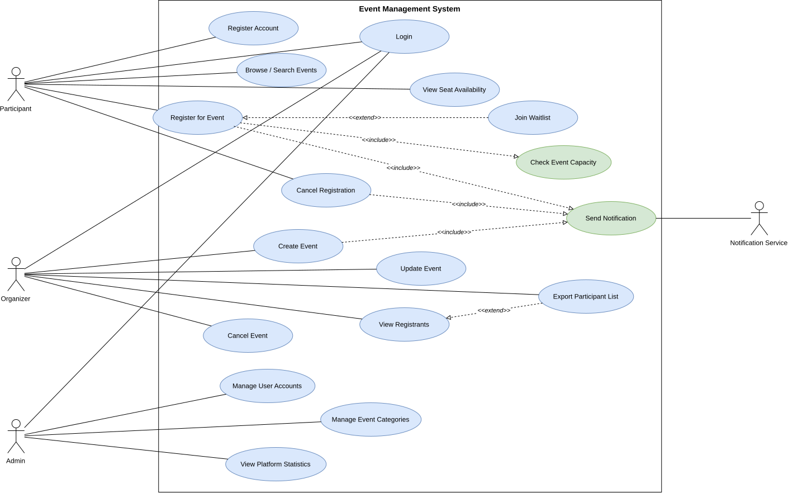
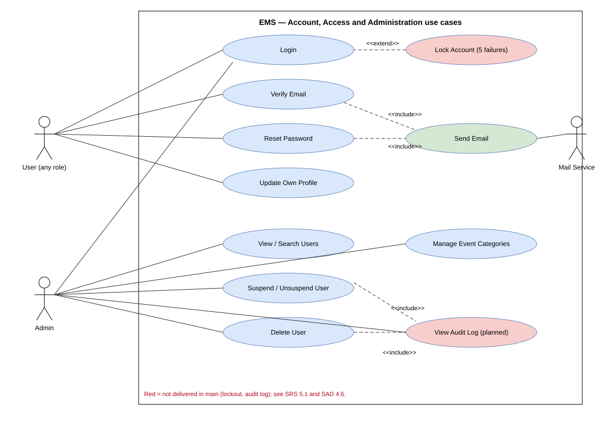

Event Management System — IEEE 830 / ISO 29148 structure
| Project: | Event Management System (EMS) — SE Mini Project |
| Version: | 3.0 |
| Authors: | Shravani Mallur (PES1UG24CS621) · Arjun Bhat (PES1UG24CS655) · Amogh Herle (PES1UG24CS653) |
| Date: | 13 November 2026 |
| Status: | Final (Sprint 2 frozen) — updated 13 Nov 2026 |
| Version | Date | Author | Change summary | Approval |
|---|---|---|---|---|
| 1.0 | 21 Oct 2026 | Team | First issue (Sprint 1) | |
| 2.0 | 04 Nov 2026 | Team | Sprint 2 update | |
| 3.0 | 13 Nov 2026 | Team | Restructured to the course SRS template; 20 FRs, 7 NFRs, security objectives/requirements, use case diagrams and RTM added |
| Role | Name | Signature / Email | Date |
|---|---|---|---|
| Course Coordinator | |||
| Repository Owner | Amogh Herle | ||
| Team members | Shravani Mallur, Arjun Bhat |
This document is the Software Requirements Specification (SRS) for the Event Management System (EMS). It defines the functional and non-functional requirements, external interfaces, security objectives and requirements, and the acceptance and verification criteria for the system. It is the baseline against which the SAD (Documents/SAD_DOCUMENT.pdf) and the Test Plan (Documents/TEST-PLAN_DOCUMENT.pdf) are traced.
EMS is a web application through which Participants discover and register for campus events, Organizers create and manage events and their registrations, and Admins manage user accounts, event categories and platform statistics. It covers account lifecycle, role-based access, event management, registration with capacity control and waitlisting, notifications, reporting and export. It excludes payments/ticketing, native mobile apps and integration with external calendars.
Developers, QA engineers, security reviewers, the course instructor/evaluators, and the project team members listed above.
| Term | Meaning |
|---|---|
| EMS | Event Management System |
| FR / NFR | Functional / Non-Functional Requirement |
| RBAC | Role-Based Access Control |
| IDOR | Insecure Direct Object Reference |
| CSRF / XSS / SQLi | Cross-Site Request Forgery / Cross-Site Scripting / SQL injection |
| TLS | Transport Layer Security |
| WCAG | Web Content Accessibility Guidelines |
| RPO / RTO | Recovery Point / Recovery Time Objective |
| RTM | Requirements Traceability Matrix |
| SRSec | Security Requirements Specification (Documents/SECURITY_DOCUMENT.pdf) |
EMS is a self-contained web application (Next.js App Router, TypeScript) backed by a PostgreSQL database and an SMTP service for transactional email. It has no dependency on other campus systems. Users access it through a standard web browser on desktop or mobile.
Server: Node.js 20+, Next.js 14, PostgreSQL 16, deployed on Vercel with managed PostgreSQL. Client: latest two versions of Chrome, Firefox, Safari and Edge; screens from 320 px wide upward.
Team of three students over three sprints; single deployable web application; all database access through an ORM; transactional email only (no SMS); TLS enforced by the hosting platform; open-source dependencies only.
Responsive web UI with role-specific navigation; clear error messages (e.g. “event full”, “already registered”); WCAG 2.1 AA conformance (NFR-006).
None beyond standard client devices; no dedicated hardware.
/api (documented in SAD 4.3).HTTPS with TLS 1.2 or higher for all traffic; session cookie HttpOnly, SameSite=Lax and Secure in production; SMTP over TLS.
Each requirement has acceptance criteria and test references (test IDs are defined in the Test Plan; format FRnnn-UT_01). IDs follow FR-nnn[a-c]; the letter suffix matches the backlog issue on the GitHub Project board.
Register, verify, authenticate, recover and administer user accounts.
| Req ID | Requirement (shall…) | Type | Priority | Source / Stakeholder | Acceptance criteria / Test case ref | Comments / Dependencies |
|---|---|---|---|---|---|---|
| FR-001a | The system shall allow a user to create an account using name, email, password and a role (Participant or Organizer); the account shall be created inactive. | Functional | High | All users / Admin | Account is stored inactive and cannot log in until verified. Malformed email or duplicate email is rejected. Fail: an account becomes active without verification. Tests: FR001-UT_01, FR001-UT_02, FR001-ST_01, FR001-ST_02 | Backlog #1, Amogh, Sprint 1, 3 pts |
| FR-001b | The system shall email a single-use, time-limited verification link and shall activate the account only when the link is used. | Functional | High | All users | After the link is used login succeeds. Used, expired or invalid links are rejected. Fail: account active without verification, or link reusable. Tests: FR001-IT_01, FR001-IT_02, FR001-ST_01 | Backlog #2, Amogh, Sprint 1, 2 pts |
| FR-002a | The system shall allow a verified, non-suspended user to log in with email and password and shall create a session. | Functional | High | All users | Valid credentials log in; wrong credentials give one generic error (no account enumeration); unverified or suspended accounts are refused. Tests: FR002-UT_01, FR002-UT_02, FR002-ST_01, FR003-ST_02 | Backlog #3, Amogh, Sprint 1, 2 pts |
| FR-002b | The system shall let a user reset a forgotten password through an emailed single-use link that expires within 1 hour. | Functional | High | All users | Reset link changes the password and the old password stops working; reused, expired or invalid links are rejected; unknown email gets the same response as a known one. Tests: FR002-IT_01, FR002-IT_02, FR002-ST_01, FR002-ST_02 | Backlog #4, Amogh, Sprint 2, 3 pts |
| FR-003a | The system shall assign each user one role (Admin, Organizer, Participant) and shall restrict features by role on the server. | Functional | High | Admin | Each role performs only permitted actions; a Participant calling an Organizer endpoint receives 403. Fail: a role performs an unauthorized action. Tests: FR003-UT_01, FR003-ST_01, FR004-ST_02 | Backlog #5, Amogh, Sprint 1, 5 pts |
| FR-003b | The system shall let a logged-in user update their own profile name; role and email shall not be editable through this function. | Functional | Medium | All users | Name change is saved and shown on next read; unauthenticated request gets 401; a user cannot change their own role. Tests: FR003-UT_02 | Backlog #6, Amogh, Sprint 2, 2 pts |
| FR-003c | The system shall let an Admin view all accounts and suspend, unsuspend or delete a user; a suspended or deleted account shall lose access immediately. | Functional | High | Admin | Suspended account cannot log in and its live session is invalid on the next request; deleted account cannot log in; an Admin cannot suspend themself; non-admins get 403. Tests: FR003-IT_01, FR003-IT_02, FR003-ST_02 | Backlog #7, Amogh, Sprint 2, 3 pts |
Organizers manage events; users discover them.
| Req ID | Requirement (shall…) | Type | Priority | Source / Stakeholder | Acceptance criteria / Test case ref | Comments / Dependencies |
|---|---|---|---|---|---|---|
| FR-004a | An Organizer shall be able to create an event with name, description, date, time, venue, category and capacity (a positive integer). | Functional | High | Organizer | All fields stored correctly; a missing field or capacity <= 0 is rejected; a Participant cannot create events. Tests: FR004-UT_01, FR004-UT_02, FR004-IT_02, FR004-ST_01, FR004-ST_02 | Backlog #8, Shravani, Sprint 1, 3 pts |
| FR-004b | An Organizer shall be able to modify the details of an event they own after creation; capacity shall not drop below confirmed registrations. | Functional | High | Organizer | Edits are saved and shown immediately; non-owner gets 403; stale edit gets 409; capacity below confirmed seats gets 409. Tests: FR004-IT_01, FR004-IT_02, FR004-ST_01 | Backlog #9, Shravani, Sprint 2, 2 pts |
| FR-005a | An Organizer shall be able to cancel or delete an event they own; a cancelled event shall not accept registrations. | Functional | High | Organizer | Cancelled event rejects registrations; second cancel gets 409; participants and non-owners cannot cancel (403). Tests: FR005-UT_01, FR005-UT_02, FR005-ST_02, FR007-ST_02 | Backlog #10, Shravani, Sprint 1, 2 pts |
| FR-005b | When an event with registered participants is updated or cancelled, the system shall notify all affected participants by email, exactly once each, without failing the primary action if mail fails. | Functional | High | Participant | Every affected participant is notified once, within 5 minutes; mail failure does not fail the cancel/update. Tests: FR005-IT_01, FR005-IT_02, FR005-ST_01, FR005-ST_02 | Backlog #11, Shravani, Sprint 2, 3 pts |
| FR-006a | Users shall be able to view the list of upcoming, non-cancelled events. | Functional | High | Participant | List shows all upcoming non-cancelled events and omits cancelled ones. Tests: FR006-ST_02 | Backlog #12, Shravani, Sprint 1, 2 pts |
| FR-006b | Users shall be able to search events by name and filter by category, date or venue. | Functional | High | Participant | Results contain only matching events; filters combine; special characters are treated as plain text. Tests: FR006-UT_01, FR006-UT_02, FR006-IT_02, FR006-ST_01, FR006-ST_02 | Backlog #13, Shravani, Sprint 2, 3 pts |
| FR-006c | An Admin shall be able to add, rename and remove event categories; changes shall be reflected platform-wide. | Functional | Medium | Admin | Added category is selectable; rename updates every event; a category in use cannot be removed; non-admins get 403. Tests: FR006-IT_01 | Backlog #14, Shravani, Sprint 2, 2 pts |
Register with capacity control, waitlist and notifications.
| Req ID | Requirement (shall…) | Type | Priority | Source / Stakeholder | Acceptance criteria / Test case ref | Comments / Dependencies |
|---|---|---|---|---|---|---|
| FR-007 | A logged-in user shall be able to register for an event; the system shall store user, event, timestamp and status and shall prevent duplicate registrations. | Functional | High | Participant | A valid registration creates exactly one record; a second attempt is rejected (409). Tests: FR007-UT_01, FR007-UT_02, FR007-IT_01, FR007-IT_02, FR007-ST_01, FR007-ST_02 | Backlog #15, Arjun, Sprint 1, 3 pts |
| FR-008 | The system shall verify remaining capacity before confirming a registration and shall reject registrations when the event is full, including under concurrency. | Functional | High | Participant | A full event rejects registration; of 100 simultaneous requests for a 1-seat event exactly one is confirmed. Tests: FR007-IT_01, FR008-UT_01, FR008-UT_02, FR008-IT_01, FR008-IT_02, FR008-ST_01, FR008-ST_02 | Backlog #16, Arjun, Sprint 1, 8 pts |
| FR-009a | When an event is full, users shall be able to join a waitlist; when a seat frees, the first waitlisted user shall be promoted and notified automatically. | Functional | Medium | Participant | Waitlist is FIFO; the first waitlisted user is promoted and notified when a seat becomes available. Tests: FR008-ST_02, FR009-UT_01, FR009-IT_01, FR009-ST_01 | Backlog #17, Arjun, Sprint 2, 5 pts |
| FR-009b | Users shall be able to cancel their own registration; the system shall send registration, cancellation and event-reminder notifications. | Functional | Medium | Participant | Cancellation updates status and seat count immediately; confirmation, cancellation and reminder emails are sent; reminders are not re-sent. Tests: FR009-UT_02, FR009-IT_02, FR009-ST_02 | Backlog #18, Arjun, Sprint 2, 3 pts |
Counts, exports and platform statistics.
| Req ID | Requirement (shall…) | Type | Priority | Source / Stakeholder | Acceptance criteria / Test case ref | Comments / Dependencies |
|---|---|---|---|---|---|---|
| FR-010a | The system shall display registered counts and available seats per event and let an Organizer export the participant list as CSV or PDF. | Functional | Medium | Organizer | Displayed and exported counts match active registrations; only the owning organizer (or admin) can export. Tests: FR007-IT_02, FR010-UT_01, FR010-UT_02, FR010-IT_01, FR010-IT_02, FR010-ST_02 | Backlog #19, Arjun, Sprint 2, 3 pts |
| FR-010b | An Admin shall be able to view platform-wide totals of events, users and registrations. | Functional | Medium | Admin | Displayed totals equal the live database totals; non-admins are rejected. Tests: FR010-ST_01 | Backlog #20, Arjun, Sprint 2, 2 pts |
NFRs are measurable and tied to test cases in the Test Plan §5.3 and §5.1.
| Req ID | Requirement | Category | Priority | Acceptance criteria / Measurement | Backlog |
|---|---|---|---|---|---|
| NFR-001 | Event list and search/filter pages shall load within 2 s and a registration shall complete within 3 s at the 95th percentile with 500 concurrent users; a 5,000-record CSV/PDF export shall complete within 10 s. | Performance | High | p95 <= 2 s (list/search), <= 3 s (registration), export <= 10 s. Test: NFT_01, NFT_02 | no backlog item |
| NFR-002 | The system shall support 10,000 users, 1,000 active events and 100,000 registrations without degradation and shall execute concurrent operations atomically (no overbooking, duplicate or lost update). | Scalability and concurrency | High | 100 simultaneous requests for a 1-seat event confirm exactly one; 100 duplicate requests create one record; waitlist order is FIFO. Test: NFT_03, NFT_04 | no backlog item |
| NFR-003 | Passwords shall be stored only as salted hashes (bcrypt/scrypt/Argon2); verification/reset links shall be single-use, random and time-limited; all traffic shall use TLS 1.2+; sensitive data at rest shall be encrypted. | Security - data protection | High | No plain-text password in DB/logs; used/expired link rejected; TLS >= 1.2. Test: NFT_05, SEC_01, SEC_06, SEC_12 | no backlog item |
| NFR-004 | RBAC shall be enforced server-side on every request; sessions shall expire after 30 minutes of inactivity; accounts shall lock after 5 consecutive failed logins; OWASP Top 10 protections shall apply; administrative actions shall be audit-logged for 12 months. | Security - access control | High | Unauthorized API call returns 403; idle session rejected after 30 min; lock after 5 failures; each admin action logged. Test: NFT_06, SEC_03, SEC_04, SEC_10, SEC_11, SEC_13 | #59, Amogh, Sprint 3, 3 pts |
| NFR-005 | The system shall be available 99.5% of each month (excluding <= 4 h announced maintenance); data shall be backed up daily and restorable with RPO <= 24 h and RTO <= 4 h. | Availability and recovery | High | Monthly uptime >= 99.5%; restore drill <= 4 h and <= 24 h data loss. Test: NFT_07 | no backlog item |
| NFR-006 | A first-time participant shall find an event and register within 3 minutes without training; the interface shall meet WCAG 2.1 AA, be responsive from 320 px upward and work on the latest two versions of Chrome, Firefox, Safari and Edge. | Usability and accessibility | Medium | >= 90% of first-time users succeed within 3 min; no WCAG AA failures; no horizontal scroll at 320 px. Test: NFT_08, NFT_11 | #61, Shravani, Sprint 3, 3 pts |
| NFR-007 | Application errors shall be logged centrally with timestamp and severity, and the codebase shall have at least 80% automated test coverage of core business logic. | Maintainability | Medium | Forced error appears in central log with timestamp and severity; coverage >= 80% for core modules. Test: NFT_09, NFT_10 | #62, Shravani, Sprint 3, 2 pts |
| ID | Objective | Description |
|---|---|---|
| SO-1 | Confidentiality | Protect credentials and personal data (name, email) from disclosure, in storage and in transit. |
| SO-2 | Integrity and least privilege | Ensure only authorized, authenticated actors can read or change events, registrations and accounts, and that data cannot be corrupted by malformed input or concurrent requests. |
| SO-3 | Availability and accountability | Resist brute-force and abuse, keep a durable record of security-relevant actions, and keep data recoverable after failure. |
Derived from Documents/SECURITY_DOCUMENT.pdf (SRSec). “Status in main” is the verified state of the delivered code as of 13 Nov 2026.
| Req ID | Requirement (shall…) | SRSec § | Objective | NFR | Test case ref | Status in main | Where / note |
|---|---|---|---|---|---|---|---|
| SR-001 | Passwords shall be stored only as salted bcrypt/Argon2 hashes and never logged. | 2.1 | SO-1 | NFR-003 | SEC_01 | Met | bcryptjs cost 12 in signup / reset-password |
| SR-002 | Session cookies shall be HttpOnly, SameSite and Secure (production), HMAC-signed, and shall expire after 30 minutes of inactivity. | 2.2 | SO-1, SO-2 | NFR-004 | SEC_02, SEC_11 | Partial | Cookie flags and HMAC met; expiry is a 7-day absolute TTL, not 30 min idle |
| SR-003 | The account shall lock after 5 consecutive failed login attempts. | 2.3 | SO-3 | NFR-004 | SEC_03 | Not met in main | Implemented only in uncommitted local work (app/api/auth/login/route.ts); not merged, no tests |
| SR-004 | RBAC and least privilege shall be enforced on the server for every request; no client-supplied role claim shall be trusted. | 3.1, 3.2 | SO-2 | NFR-004 | SEC_04, SEC_13 | Partial | requireAdmin uses real sessions only; the Organizer/Participant demo fallback still trusts x-user-role / event_session_role |
| SR-005 | Object references shall be authorized server-side (ownership checks) to prevent IDOR. | 3.3 | SO-2 | NFR-004 | SEC_05 | Met | event.organizerId checks in app/api/events/[id], export, registrations |
| SR-006 | All client-server traffic shall use TLS 1.2 or higher. | 4.1 | SO-1 | NFR-003 | SEC_06 | Met (hosting) | Enforced by the hosting platform (Vercel); not independently scanned |
| SR-007 | Sensitive data at rest shall be encrypted. | 4.2 | SO-1 | NFR-003 | SEC_06 | Met (hosting) | Managed PostgreSQL encryption at rest; no application-level field encryption |
| SR-008 | All database access shall use parameterized queries / an ORM. | 5.1 | SO-2 | NFR-004 | SEC_07 | Met | Prisma only; no raw SQL |
| SR-009 | User-supplied input shall be validated and output encoded to prevent XSS. | 5.2 | SO-2 | NFR-004 | SEC_08, SEC_15 | Met | zod validation, escapeHtml in emails, React escaping, CSV formula neutralization |
| SR-010 | State-changing requests shall be protected against CSRF. | 5.3 | SO-2 | NFR-004 | SEC_09 | Partial | SameSite=Lax cookie only; no anti-CSRF token |
| SR-011 | Security events and administrative actions shall be recorded in a durable audit log (12 months) without secrets or plain-text passwords. | 6.1, 6.2 | SO-3 | NFR-004, NFR-007 | SEC_10 | Not met in main | AuditLog model and logEvent exist only in uncommitted local work; main logs console.error only |
| SR-012 | Verification and reset tokens shall be random, single-use, time-limited and stored hashed; login errors shall not reveal whether an account exists. | 2.1 | SO-1 | NFR-003 | SEC_12, SEC_14 | Met | lib/tokens.ts (sha256 hash, usedAt, expiresAt) |
Two use case diagrams are provided: (1) the overall system view; (2) the account, access and administration view with the security-related use cases. Detailed use case flows (main and alternate) are in Documents/USECASE_FLOW.pdf.


Status legend: P = verified passed; A = accepted/documented deviation or partially met (see Test Plan §14); N = not yet verified. The separate lists SRS→Test and Security→Test are in Documents/TRACEABILITY_MATRICES.pdf.
| Req ID | Requirement short | Section | Design (SAD component) | Module | Test case(s) | Status |
|---|---|---|---|---|---|---|
| FR-001a | Account creation | 4 | Authentication | app/api/auth/signup | FR001-UT_01, FR001-UT_02, FR001-ST_01, FR001-ST_02 | P |
| FR-001b | Email verification | 4 | Authentication | app/api/auth/verify, lib/tokens.ts | FR001-IT_01, FR001-IT_02, FR001-ST_01 | P |
| FR-002a | Login | 4 | Authentication | app/api/auth/login, lib/session.ts | FR002-UT_01, FR002-UT_02, FR002-ST_01, FR003-ST_02 | P |
| FR-002b | Password reset | 4 | Authentication | app/api/auth/forgot-password, reset-password | FR002-IT_01, FR002-IT_02, FR002-ST_01, FR002-ST_02 | P |
| FR-003a | Role-based access control | 4 | Authentication | lib/auth.ts | FR003-UT_01, FR003-ST_01, FR004-ST_02 | P |
| FR-003b | Profile update | 4 | Authentication | app/api/auth/me | FR003-UT_02 | P |
| FR-003c | Admin manages user accounts | 4 | UserAccounts | app/api/admin/users | FR003-IT_01, FR003-IT_02, FR003-ST_02 | P |
| FR-004a | Create event | 4 | EventManager | app/api/events | FR004-UT_01, FR004-UT_02, FR004-IT_02, FR004-ST_01, FR004-ST_02 | P |
| FR-004b | Edit event | 4 | EventManager | app/api/events/[id] (PUT) | FR004-IT_01, FR004-IT_02, FR004-ST_01 | P |
| FR-005a | Cancel or delete event | 4 | EventManager | app/api/events/[id] (PATCH, DELETE) | FR005-UT_01, FR005-UT_02, FR005-ST_02, FR007-ST_02 | P |
| FR-005b | Notify participants of change | 4 | NotificationService | lib/registration.ts, lib/emailTemplates.ts | FR005-IT_01, FR005-IT_02, FR005-ST_01, FR005-ST_02 | P |
| FR-006a | View events | 4 | EventCatalog | app/events, app/api/events (GET) | FR006-ST_02 | P |
| FR-006b | Search and filter events | 4 | EventCatalog | lib/eventFilters.ts | FR006-UT_01, FR006-UT_02, FR006-IT_02, FR006-ST_01, FR006-ST_02 | P |
| FR-006c | Admin manages categories | 4 | Categories | lib/categories.ts, app/api/admin/categories | FR006-IT_01 | P |
| FR-007 | Register for event | 4 | Registration | app/api/events/[id]/register | FR007-UT_01, FR007-UT_02, FR007-IT_01, FR007-IT_02, FR007-ST_01, FR007-ST_02 | P |
| FR-008 | Capacity check | 4 | CapacityCheck | lib/registration.ts | FR007-IT_01, FR008-UT_01, FR008-UT_02, FR008-IT_01, FR008-IT_02, FR008-ST_01, FR008-ST_02 | P |
| FR-009a | Waitlist with auto-promotion | 4 | Waitlist | lib/registration.ts | FR008-ST_02, FR009-UT_01, FR009-IT_01, FR009-ST_01 | P |
| FR-009b | Self-cancellation and notifications | 4 | Registration, NotificationService | lib/registration.ts, app/api/reminders | FR009-UT_02, FR009-IT_02, FR009-ST_02 | P |
| FR-010a | Counts, seat availability and export | 4 | Reports | lib/export.ts | FR007-IT_02, FR010-UT_01, FR010-UT_02, FR010-IT_01, FR010-IT_02, FR010-ST_02 | P |
| FR-010b | Admin platform statistics | 4 | Reports | lib/stats.ts, app/api/admin/stats | FR010-ST_01 | P |
| NFR-001 | Event list and search/filter pages shall load within 2 s and… | 5 | cross-cutting (SAD 3.8) | see SAD 3.8 | NFT_01, NFT_02 | A |
| NFR-002 | The system shall support 10,000 users, 1,000 active events a… | 5 | cross-cutting (SAD 3.8) | see SAD 3.8 | NFT_03, NFT_04 | P |
| NFR-003 | Passwords shall be stored only as salted hashes (bcrypt/scry… | 5 | cross-cutting (SAD 3.8) | see SAD 3.8 | NFT_05, SEC_01, SEC_06, SEC_12 | P |
| NFR-004 | RBAC shall be enforced server-side on every request; session… | 5 | cross-cutting (SAD 3.8) | see SAD 3.8 | NFT_06, SEC_03, SEC_04, SEC_05, SEC_09, SEC_10, SEC_11, SEC_13 | A |
| NFR-005 | The system shall be available 99.5% of each month (excluding… | 5 | cross-cutting (SAD 3.8) | see SAD 3.8 | NFT_07 | A |
| NFR-006 | A first-time participant shall find an event and register wi… | 5 | cross-cutting (SAD 3.8) | see SAD 3.8 | NFT_08, NFT_11 | A |
| NFR-007 | Application errors shall be logged centrally with timestamp … | 5 | cross-cutting (SAD 3.8) | see SAD 3.8 | NFT_09, NFT_10 | A |